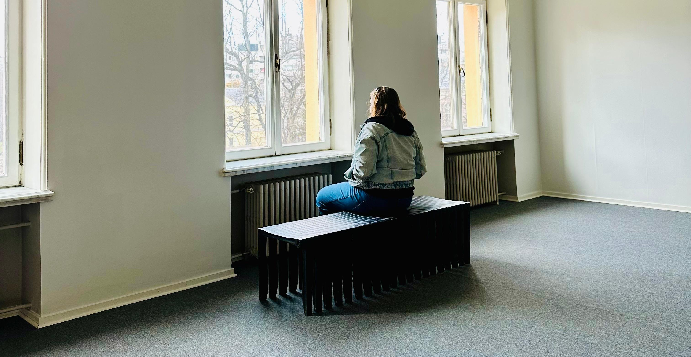
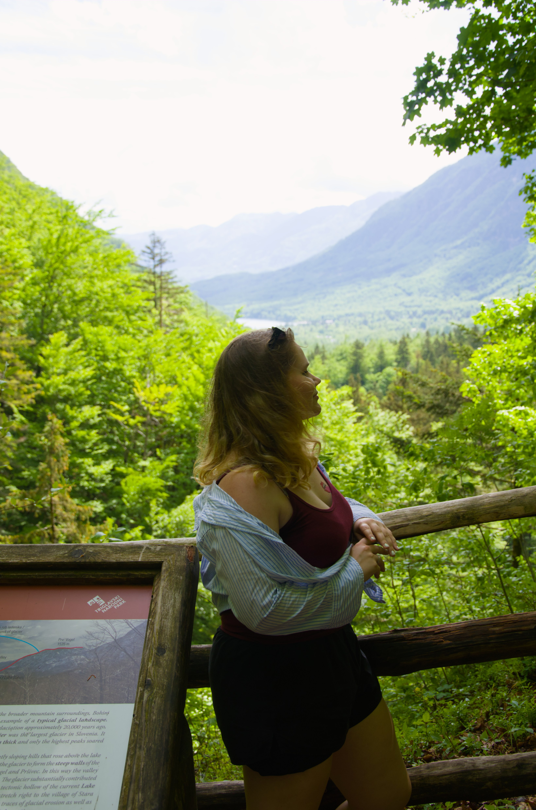
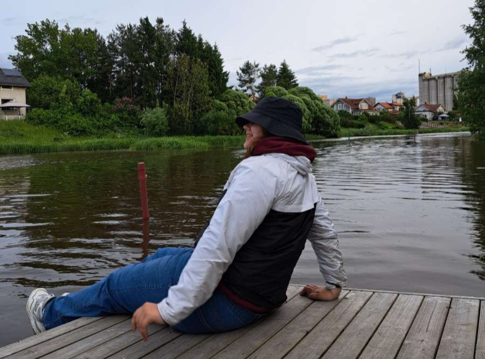

Olen Katariina, itseoppinut taiteilija. Asun tällä hetkellä Loimaalla. Valmistuin keväällä 2026 Novida Loimaan lukiosta. Aloitan opinnot Turussa kulttuurituottajana vuonna 2028. Tätä edeltää naisten vapaaehtoinen asepalvelus. Ammattinimikkeen puute johtunee nuoresta iästä, mutta osaamista ja laadukasta jälkeä tarjoan silti.
Konkreettisesti taiteilen kotonani ateljeeksi nimetyssä varastotilassa. Pääasiassa pyrin toteuttamaan teokset öljyväreillä. Kokemusta löytyy kuitenkin myös muista tekniikoista, kuten kaikille tutuista puu- ja vesiväreistä aina hiileen ja akryylimaaleihin.

Taiteeni käsittelee luontoteemoja sekä yhteiskunnallisia kysymyksiä. Minua kiinnostaa tunteiden herättäminen taiteen keinoin - oli se sitten nostalgiaa tai turvaa katsojan nähdessä kotimaisen maiseman, tai surun, empatian, jopa vihan rippeitä hänen pohtiessaan yhteiskunnan epäkohtia. Taiteeni liittyy perinteisesti suomalaisiksi luokiteltuihin arvoihin, kuten puhtauteen, turvallisuuteen ja sisukkuuteen. Inspiraationi saan luonnosta, ympäröivistä ihmisistä sekä maailman menosta. Minulla on tarve luoda merkityksellistä, kaunista ja silmiä avaavaa taidetta. Taide on väline, jonka avulla voin nostaa esille haluamani asioita valitsemastani näkökulmasta — suomalaisena, nuorena ja naisena. Onnistunut näkökulman avaaminen on kommunikointia parhaimmillaan. Silloin erilaisista lähtökohdista tuleva katsoja voi ymmärtää uusia perspektiivejä. Yksi kuvahan kertoo enemmän kuin tuhat sanaa.